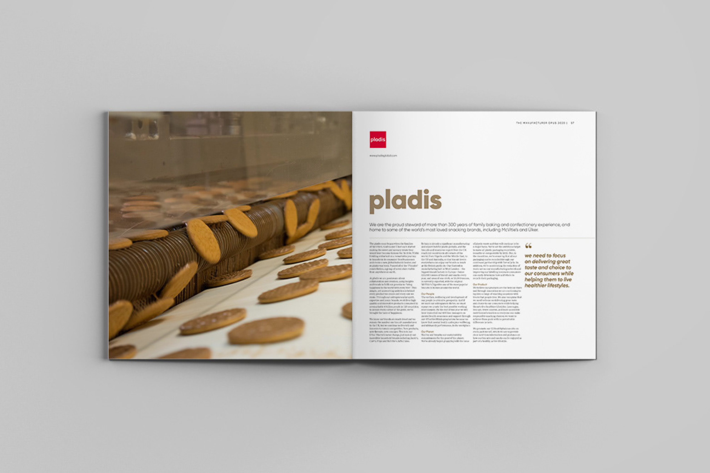
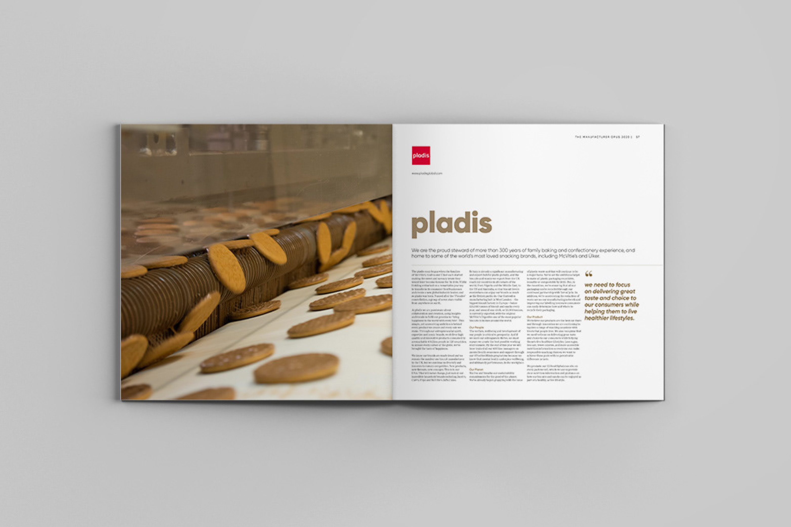

Summary
The Manufacturer OPUS is a coffee table publication that showcases the best manufacturers in Britain. All companies displayed were finalists in The Manufacturer Manufacturing Excellence Awards. The book is distributed at The Manufacturer's 15 events and sent to every MP in the UK.
 
